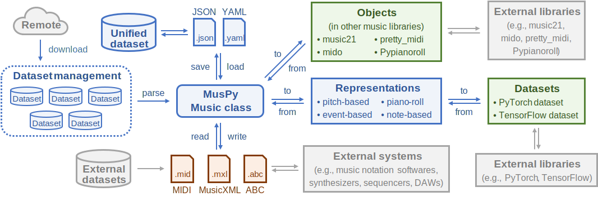

MusPy documentation¶
MusPy is a Python library for symbolic music generation.
Features¶
Data I/O supports for common symbolic music formats and interfaces to other symbolic music libraries
Manipulation, rendering, visualization and evaluation tools for symbolic music data
Support for common music representations
Dataset management for common datasets and local collections, with interfaces to PyTorch and TensorFlow
Here is the system diagram of the package.
